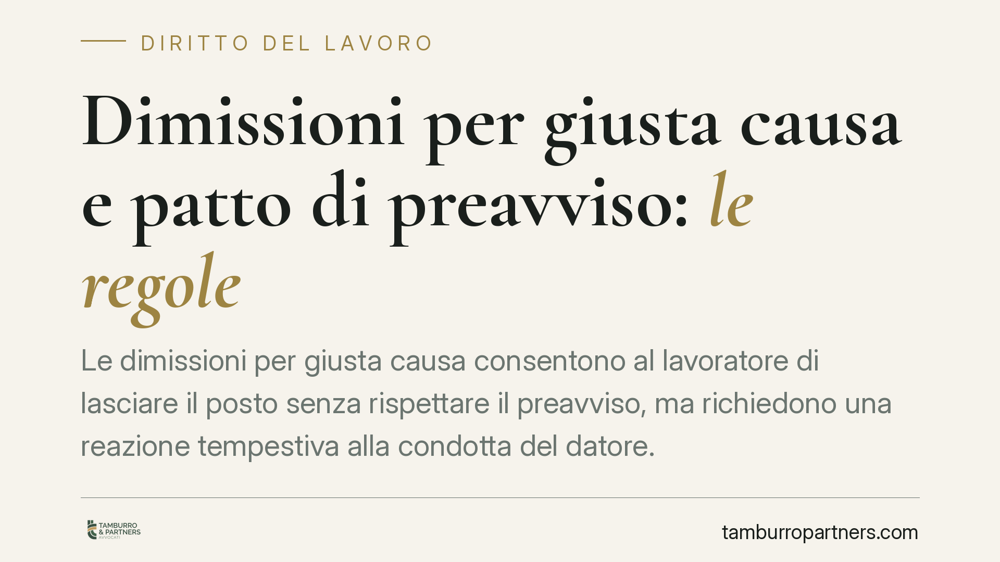

Dimissioni per giusta causa e patto di preavviso: le regole
Le dimissioni per giusta causa consentono al lavoratore di lasciare il posto senza rispettare il preavviso, ma richiedono una reazione tempestiva alla condotta del datore. Diverso è il patto individuale che allunga il preavviso rispetto al CCNL: la sua validità è tutt'altro che scontata. Vediamo i presupposti applicativi e le cautele da adottare prima di agire.

Inquadramento normativo
Il fondamento delle dimissioni per giusta causa è l'art. 2119 del codice civile. La norma stabilisce che ciascuno dei contraenti può recedere dal contratto prima della scadenza, se a tempo determinato, o senza preavviso, se a tempo indeterminato, qualora si verifichi una causa che non consenta la prosecuzione, anche provvisoria, del rapporto.
La disposizione vale in entrambe le direzioni: il datore la utilizza per il licenziamento in tronco, il lavoratore per uscire dal rapporto senza rispettare il termine di preavviso. In questa seconda ipotesi, il lavoratore conserva inoltre il diritto all'indennità sostitutiva del preavviso a carico del datore, secondo il meccanismo dell'art. 2118, comma 2, c.c.: chi subisce la giusta causa non deve sopportare il costo del mancato preavviso.
Il requisito dell'immediatezza
La giurisprudenza consolidata richiede che la reazione del lavoratore sia tempestiva. La giusta causa presuppone un fatto talmente grave da rendere intollerabile la prosecuzione anche solo temporanea del rapporto. Se il dipendente continua a lavorare per settimane dopo l'inadempimento del datore, quel comportamento suggerisce che la prosecuzione era, di fatto, tollerabile.
In concreto: mancato pagamento reiterato della retribuzione, demansionamento, molestie, condotte vessatorie. Sono situazioni potenzialmente idonee a integrare la giusta causa, ma la reazione va manifestata in tempi ragionevolmente vicini al fatto o al suo aggravarsi. Un ritardo ingiustificato indebolisce la posizione del lavoratore in un eventuale contenzioso sull'indennità.
Il patto di preavviso più lungo
Capita che il contratto individuale preveda un preavviso di dimissioni superiore a quello fissato dal CCNL. La sua ammissibilità è discussa. L'art. 2118 c.c. disciplina il recesso con preavviso in un'ottica di sostanziale parità tra le parti; un patto che grava solo sul lavoratore, comprimendone la libertà di recedere, non è automaticamente valido.
Parte della giurisprudenza ammette clausole di questo tipo quando trovano una contropartita effettiva a favore del lavoratore, ad esempio un compenso aggiuntivo e stabile. In questa prospettiva assume rilievo l'assegno cosiddetto ad personam non assorbibile: una voce retributiva aggiuntiva e permanente, che non viene riassorbita dai futuri aumenti contrattuali. La sua funzione è compensare il maggior vincolo imposto al lavoratore.
Non si tratta però di una regola granitica. La valutazione resta legata al caso concreto: durata dell'allungamento, natura della contropartita, effettività del sacrificio richiesto. È un terreno in cui affermazioni troppo nette sono fuori luogo.
Implicazioni pratiche
Per il lavoratore, la scelta tra dimissioni ordinarie e dimissioni per giusta causa incide su due aspetti economici rilevanti: l'indennità sostitutiva del preavviso e l'accesso alla NASpI.
Di regola le dimissioni volontarie non danno diritto all'indennità di disoccupazione. L'art. 3 del D.Lgs. 22/2015 richiede infatti uno stato di disoccupazione involontario. Le dimissioni per giusta causa costituiscono però una deroga riconosciuta: essendo determinate da un comportamento illegittimo del datore, sono equiparate alla perdita involontaria dell'occupazione e consentono di accedere alla prestazione, nel rispetto degli altri requisiti.
Per il datore, il rischio è duplice: dover corrispondere l'indennità sostitutiva del preavviso e vedersi opporre l'invalidità di clausole di preavviso allungato prive di reale contropartita.
Cosa fare in concreto
- Documentate il fatto grave prima di agire. Raccogliete buste paga non pagate, comunicazioni, testimonianze o certificazioni mediche che provino la condotta del datore.
- Reagite tempestivamente. Non lasciate trascorrere tempo dopo l'inadempimento: il ritardo può far venire meno il requisito dell'immediatezza.
- Formalizzate per iscritto la giusta causa. Nella comunicazione di dimissioni indicate in modo chiaro i motivi, così da poter rivendicare indennità e NASpI.
- Verificate il contratto individuale. Controllate se è previsto un preavviso più lungo del CCNL e se esiste una contropartita economica stabile a vostro favore.
- Fatevi assistere prima dell'invio. Le dimissioni per giusta causa vanno comunque trasmesse con la procedura telematica; un controllo preventivo riduce il rischio di errori procedurali difficilmente reversibili.
---
Contributo informativo a cura di Tamburro & Partners Avvocati - Avv. Giuseppe Tamburro. Non costituisce parere legale.
Ogni storia di lavoro ha i suoi tempi.
Se gestisci HR e vuoi un confronto su contenzioso, ispezioni o licenziamenti, scrivi allo studio. Ti rispondiamo entro un giorno lavorativo.